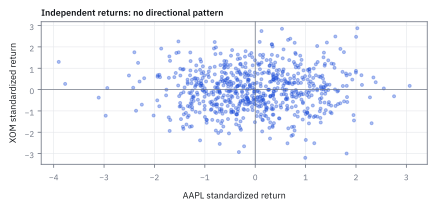
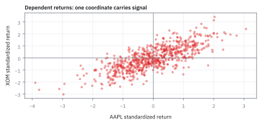

6.4 Norms
พอร์ตใหญ่แค่ไหน? ต้องเลือกไม้บรรทัดให้ตรงคำถาม
พอร์ตหุ้นสหรัฐสมมติห้าตัวมีน้ำหนักต่อ NAV เป็น 40%, −25%, 30%, 15%, −10% มีคนรายงานขนาดพอร์ตว่า 50% อีกคนว่า 120% และอีกคนว่า 40% ใครคำนวณผิด?
ดูว่าทั้งสามคนวัดอะไร
อาจถูกทั้งสามคน: 50% คือ net dollar exposure, 120% คือ gross exposure และ 40% คือสถานะที่มีค่าสัมบูรณ์ใหญ่ที่สุด แต่สามเลขนี้ไม่ได้บอก beta ตลาด เงินกู้ หรือขาดทุนสูงสุดโดยอัตโนมัติ ต้องรู้ความหมายก่อนนำไปตั้ง limit
Norm เป็นกติกาวัดขนาดของ vector ส่วน risk model เป็นกติกาที่เชื่อมสถานะกับผลลัพธ์ไม่แน่นอน บทนี้จะใช้ norm คำนวณ exposure และ turnover ก่อน แล้วค่อยระบุเงื่อนไขที่ทำให้มันเชื่อมกับ volatility ได้
1. เดิน 7 กิโลเมตร แต่ห่างจากจุดเริ่ม 5 กิโลเมตร
เดินตะวันออก 3 กม. แล้วเหนือ 4 กม. ระยะตามถนนคือ $3+4=7$ ส่วนระยะตรงคือ $\sqrt{3^2+4^2}=5$ ทั้งคู่ถูก แต่ตอบคนละคำถาม พอร์ตหลายสถานะก็มีวิธีรวมขนาดได้มากกว่าหนึ่งแบบ
Norm ที่เขียนเป็น $\|\mathbf x\|$ ต้องผ่านกติกาต่อไปนี้ สำหรับ vectors ในพื้นที่เดียวกันและ scalar $a$:
| กติกา | ความหมาย |
|---|---|
| $\|\mathbf x\|\ge0$ และเป็นศูนย์ก็ต่อเมื่อ $\mathbf x=\mathbf0$ | สถานะที่ไม่ว่างต้องมีขนาดบวก |
| $\|a\mathbf x\|=|a|\|\mathbf x\|$ | เพิ่มทุกสถานะสองเท่า ขนาดเพิ่มสองเท่า; กลับเครื่องหมายไม่ทำให้ขนาดติดลบ |
| $\|\mathbf x+\mathbf y\|\le\|\mathbf x\|+\|\mathbf y\|$ | Triangle inequality: ขนาดผลรวมไม่เกินผลรวมขนาด |
ผลรวมมีเครื่องหมายไม่ใช่ norm เช่น $(0.5,-0.5)$ รวมเป็นศูนย์ทั้งที่ยังถือสถานะอยู่ แม้ใช้ค่าสัมบูรณ์ของผลรวมก็ยังไม่ผ่านกติกาข้อแรก ส่วนผลรวมกำลังสองไม่ใช่ norm เพราะขยายสองเท่าแล้วค่าขยายสี่เท่า ต้องถอดรากจึงจะได้ scaling ตามกติกา
2. คำนวณสามไม้บรรทัดจากพอร์ตเดียว
กำหนด $\mathbf w=(0.40,-0.25,0.30,0.15,-0.10)^{\mathsf T}$ น้ำหนักติดลบคือ short นิยามและผลลัพธ์ของแต่ละ norm คือ
L1 นับขนาดทุกสถานะ, L2 รวมแบบกำลังสองแล้วถอดราก, L∞ เลือกช่องใหญ่สุด ทั้งหมดไม่สนว่า long หรือ short ในขั้นวัดขนาด แต่เครื่องหมายยังมีผลกับ P&L และ covariance ของพอร์ต
ถ้า NAV เท่ากับ 100 ล้าน USD จะได้ gross 120 ล้าน, net $100(0.40-0.25+0.30+0.15-0.10)=50$ ล้าน และสถานะใหญ่สุด 40 ล้าน ส่วน L2 ของ dollar-exposure vector เท่ากับ 58.7367 ล้าน USD โดย homogeneity แต่เลขสุดท้ายยังไม่ใช่ forecast ว่าจะเสียเงินเท่าไร
Long รวม 85 ล้านและ short รวม 35 ล้าน จึงมี net หุ้น 50 ล้าน ในบัญชีสมมติที่ไม่มีรายการอื่น เงินสดสุทธิอีก 50 ล้านทำให้ NAV เป็น 100 ล้าน ดังนั้น gross 120% ไม่ได้พิสูจน์ว่าเรากู้เงินสด 20% หลักประกันและเงิน short ที่ใช้ได้จริงขึ้นกับข้อกำหนดนายหน้า
หากหุ้นทุกตัวลดลง 1% พร้อมกันจริง P&L จะเท่ากับ net คูณ −1% หรือ −500,000 USD แต่ถ้าหุ้นตอบสนองต่อตลาดไม่เท่ากัน ต้องใช้ exposure ที่เหมาะสม เช่น beta ไม่ใช่นำ net ไปเรียก market exposure โดยไม่ตรวจ
3. เช็กขนาดด้วยขอบเขตที่ต้องจริงเสมอ
สำหรับ vector ที่มี $n$ ช่อง มีลำดับ $\|\mathbf x\|_\infty\le\|\mathbf x\|_2\le\|\mathbf x\|_1\le\sqrt n\|\mathbf x\|_2$ สองช่วงแรกมาจากการบวกจำนวนไม่ติดลบ:
สำหรับขอบบนสุด ให้ $m=\sum_i|x_i|/n$ เป็นค่าเฉลี่ยของขนาดแต่ละช่อง แล้วใช้ผลรวมกำลังสองที่ไม่ติดลบ:
ถ้าระบบรายงาน L2 มากกว่า L1 ของ vector เดียวกัน ต้องกลับไปตรวจสูตรหรือหน่วย ไม่ใช่อธิบายว่าเกิดจาก correlation เพราะอสมการนี้เป็นเรื่องของตัวเลขใน vector ล้วน ๆ
อีกวิธีตรวจคือขยายทุกสถานะสองเท่า: L1 ต้องเป็น 2.40, L2 เป็น 1.174734 และ L∞ เป็น 0.80 เครื่องหมายลบของตัวคูณก็ให้ขนาดเท่ากัน เช่น $\|-2\mathbf w\|_2=2\|\mathbf w\|_2$
4. Lp รวมวิธีวัดเหล่านี้ไว้ในครอบครัวเดียว
นิยามสำหรับ $1\le p\lt\infty$ คือ $\|\mathbf x\|_p=(\sum_i|x_i|^p)^{1/p}$ ใส่ $p=1$ ได้ L1 และ $p=2$ ได้ L2 ตัวอย่าง $(1,2)$ ให้
ทำไมเมื่อ $p$ ใหญ่มากจึงเหลือค่ามากสุด? ให้ $M=\max_i|x_i|$ เรามีอย่างน้อยหนึ่งช่องที่ขนาด $M$ และทุกช่องมีขนาดไม่เกิน $M$:
เมื่อ $p\to\infty$ จะได้ $n^{1/p}\to1$ จึงบีบให้ norm เข้าใกล้ $M$ ส่วน $0\lt p\lt1$ ไม่ผ่าน triangle inequality โดยทั่วไป เช่น $p=1/2$ ให้ “ขนาด” ของ $(1,1)$ เท่ากับ 4 มากกว่า $1+1$ ที่ได้จาก $(1,0)$ กับ $(0,1)$ จึงไม่เรียกว่า norm

5. Turnover: ใช้ขนาดของรายการซื้อขาย ไม่ใช่มูลค่าซื้อสุทธิ
พอร์ตสามหุ้นสมมติ AAPL/JPM/XOM มีน้ำหนักก่อนซื้อขาย $(0.50,-0.30,0.10)$ และเป้าหมาย $(0.60,-0.40,0.20)$ ใช้ราคาและ NAV ก่อนต้นทุนชุดเดียวกันในการคำนวณ:
เมื่อ $N=10$ ล้าน USD ต้องซื้อ AAPL 1 ล้าน, เพิ่ม short JPM 1 ล้าน และซื้อ XOM 1 ล้าน ยอดซื้อขายรวมคือ 3 ล้าน แม้เงินสดออกสุทธิเพียง 1 ล้านก่อนค่าใช้จ่าย หากคิด fee ตามทุกคำสั่ง การใช้ยอดสุทธิเป็นฐานจะนับต้นทุนขาดไป

ในหน้านี้ turnover นับทั้งขาซื้อและขายเป็น 30% ของ NAV บางรายงานใช้ครึ่งหนึ่งของผลรวมนี้ จึงอาจเห็น 15% ต้องเทียบนิยามและการจัดการ cash flow ก่อนเทียบตัวเลข
หากขยาย NAV เป็น 100 ล้าน และสมมติต้นทุนรวมคงที่ 10 basis points ของ traded notional จะได้
การคูณ 12 สมมติว่า NAV และ turnover ต่อครั้งเหมือนเดิมทั้งปี สำหรับงานจริง ค่า spread, fee และ market impact ต่างกันตามชื่อและขนาดคำสั่ง แบบเชิงเส้นที่ละเอียดขึ้นคือ $N\sum_i c_i|\Delta w_i|$ เมื่อ $c_i$ เป็นต้นทุนต่อ dollar ของหุ้นนั้น แต่ยังอาจไม่ครอบคลุม impact ที่ไม่เป็นเส้นตรง
6. L2 กลายเป็น volatility ได้เมื่อใด?
ให้ return มี variance จำกัด และน้ำหนักคงที่ในงวด หากแต่ละหุ้นมี SD เท่ากับ $\sigma$ และ covariance ข้ามหุ้นเป็นศูนย์ จะได้
ความเป็นอิสระทางสถิติเป็นเงื่อนไขที่เพียงพอให้ covariance เป็นศูนย์ แต่ไม่จำเป็นต้องสมมติแรงขนาดนั้น ใช้เพียง uncorrelated กับ variance ที่มีอยู่ก็พอ อย่างไรก็ตาม เงื่อนไข “SD เท่ากัน” ยังต้องรักษาไว้เพื่อดึง $\sigma$ ร่วมออกมา
สำหรับพอร์ตสามตัวหลัง rebalance และ $\sigma=20\%$ ต่อปี:

ถ้าหุ้นทั้งสามมี return เหมือนกันทุกครั้งและ SD 20% พอร์ต $(0.60,-0.40,0.20)$ จะมี SD $0.20|0.60-0.40+0.20|=8\%$ ส่วน $(0.40,0.40,0.40)$ มี SD 24% ลำดับกลับจากกรณี covariance ศูนย์ ทั้งที่ L2 ของแต่ละพอร์ตไม่เปลี่ยน
หุ้น 100 ตัวก็ไม่ได้รับประกันความเสี่ยง 2%
ถ้า equal weight $1/d$, SD ทุกตัวเท่ากันและ covariance ศูนย์ จะมี $\|\mathbf w\|_2=1/\sqrt d$ จึงได้ $20\%/\sqrt{100}=2\%$ แต่หากทุกคู่มี correlation $\rho$ การนับพจน์ข้ามคู่ให้
สำหรับ correlation ร่วมคงที่ที่ไม่ติดลบ ความเสี่ยงเข้าใกล้ $\sigma\sqrt\rho$ เมื่อเพิ่มจำนวนหุ้นมากขึ้น ไม่ได้เข้าใกล้ศูนย์เสมอไป โมเดลทั่วไปต้องใช้ $\sigma_p=\sqrt{\mathbf w^{\mathsf T}\Sigma\mathbf w}$ โดย $\Sigma$ เป็น covariance matrix
ถ้า $\Sigma$ positive definite สูตรนี้เป็น norm ของน้ำหนัก แต่ถ้ามีสถานะไม่เป็นศูนย์ที่ variance เป็นศูนย์ เช่น long และ short ผลตอบแทนเดียวกันพอดี จะเป็นเพียง seminorm ดังนั้น triangle inequality ไม่ใช่หลักประกันว่าการเพิ่มชื่อหุ้นจะทำให้พอร์ตเสี่ยงน้อยลงอย่างเคร่งครัดทุกครั้ง
7. Effective number ต้องแยกความกระจุกออกจากขนาดรวม
สำหรับน้ำหนัก long-only ที่รวมเป็นหนึ่ง การใช้ $1/\sum_iw_i^2$ วัดจำนวนชื่อที่เทียบเท่าการกระจายเท่ากันมีความหมาย เช่นห้าตัวตัวละ 20% ให้ $1/[5(0.2)^2]=5$ แต่พอร์ต long-short ต้นบทไม่ได้อยู่ภายใต้ normalization นี้
หากคำนวณตรง ๆ จะได้ $1/0.345\approx2.8986$ และเมื่อเพิ่ม leverage สองเท่าจะเหลือ $1/1.38\approx0.7246$ ทั้งที่สัดส่วนขนาดแต่ละชื่อยังเหมือนเดิม จึงไม่ควรอ่านเป็นจำนวนหุ้นที่กระจายอยู่จริง
ถ้าต้องการวัดความกระจุกของ gross notional ให้กำหนด $q_i=|w_i|/\|\mathbf w\|_1$ สำหรับพอร์ตไม่เป็นศูนย์ แล้วคำนวณ:
ขยายทุกสถานะพร้อมกันแล้วค่านี้ไม่เปลี่ยน และอยู่ระหว่าง 1 กับจำนวนช่องที่ใช้วัด แต่ยังไม่ใช่จำนวน “เดิมพันอิสระ” เพราะไม่ได้ใช้ correlation เครื่องหมายหรือความผันผวนของแต่ละชื่อ
8. ใช้ norm เป็น penalty ต้องดูข้อจำกัดด้วย
L1 penalty มักใช้ลด turnover หรือส่งเสริมคำตอบที่บางช่องเป็นศูนย์ ส่วน squared L2 penalty ใช้หดขนาดและไม่ชอบสถานะที่กระจุกมาก อย่างไรก็ตาม ไม่มี norm ใดรับประกันจำนวนชื่อที่จะเหลือโดยไม่ระบุปัญหา optimization
ตัวอย่างหนึ่งตัวแปร: ทำไม L1 ทำให้เป็นศูนย์ได้?
ให้ $a$ เป็นเป้าหมายและ $\lambda\ge0$ กรณี L1 พิจารณา objective $\tfrac12(w-a)^2+\lambda|w|$ ถ้า $w\gt0$ derivative เป็น $w-a+\lambda$; ถ้า $w\lt0$ เป็น $w-a-\lambda$ จึงได้คำตอบ
เมื่อ $|a|\le\lambda$ อนุพันธ์จากซ้ายที่ศูนย์ไม่บวก และจากขวาไม่ลบ จึงต่ำสุดที่ศูนย์ ตัวอย่าง $a=0.01,\lambda=0.02$ ให้ L1 เป็นศูนย์ แต่ squared L2 ให้ $0.01/1.04\approx0.009615$
ข้อยกเว้นที่สำคัญ: ถ้าบังคับ long-only และลงทุนเต็มจำนวนอยู่แล้ว จะมี $\|\mathbf w\|_1=1$ สำหรับทุกคำตอบ การบวก $\lambda\|\mathbf w\|_1$ จึงเป็นค่าคงที่และไม่ช่วยเลือกพอร์ตให้ sparse ส่วน $\|\Delta\mathbf w\|_1$ สำหรับ turnover เป็นคนละเรื่อง
Norm ยังขึ้นกับหน่วยและพิกัด จากหัวข้อ 6.3 พอร์ตมี $\|\mathbf x\|_2=\sqrt{77}$ แต่พิกัดใหม่มี $\|\mathbf c\|_2=\sqrt{46.5}$ ถ้าต้องการวัดด้วยไม้บรรทัดรายหุ้นเดิม ต้องใช้ $\|B\mathbf c\|_2$ ไม่ใช่เปลี่ยน basis แล้วใช้สูตรเดิมกับพิกัดใหม่โดยไม่ปรับวิธีวัด
ตรวจเองใน 10 วินาที
ข้อ 1: แผน A เปลี่ยนน้ำหนักห้าตัว ตัวละ 2% แผน B เปลี่ยนตัวเดียว 10% ถ้าคิดต้นทุนต่อ dollar เท่ากัน แผนไหนแพงกว่า?
ดูเฉลย
L1 เท่ากันที่ 10% จึงมีต้นทุนเท่ากันภายใต้สมมติฐานนี้ แต่ L2 ของแผน A คือ $\sqrt{5(0.02)^2}\approx0.04472$ ส่วนแผน B คือ 0.10 การบอกว่าใครมีผลต่อความเสี่ยงมากกว่าต้องรู้สินทรัพย์และ covariance เพิ่ม
ข้อ 2: L∞ ของพอร์ตต้นบทเท่ากับ 40% จึงแปลว่าพอร์ตไม่มีวันเสียเกิน 40% ใช่ไหม?
ดูเฉลย
ไม่ใช่ ขนาดสถานะไม่ใช่ขาดทุนสูงสุด เช่นชื่อที่ short 25% ของ NAV ขึ้น 200% จะทำให้เสีย 50% ของ NAV จากชื่อนั้นเพียงตัวเดียวในโมเดลราคาหุ้นเชิงเส้น L∞ ใช้คุมขนาดต่อชื่อ ไม่ได้จำกัด return ของชื่อที่ถือ
ข้อ 3: เพิ่มทุกสถานะของพอร์ตต้นบทสามเท่า Gross และ effective number แบบ gross เปลี่ยนอย่างไร?
ดูเฉลย
Gross เพิ่มจาก 1.20 เป็น 3.60 ส่วน $N_{\text{eff,gross}}$ คงที่ราว 4.1739 เพราะตัวเศษและตัวส่วนเพิ่มเก้าเท่าพร้อมกัน ความกระจุกเชิงสัดส่วนคงเดิม แต่ขนาดและความเสียหายในแต่ละ price scenario ไม่ได้คงเดิม
JavaScript: ตรวจ norm และแยกสมมติฐานความเสี่ยง
function norm(v, p = 2) {
if (!Array.isArray(v) || !v.length || !v.every(Number.isFinite)) {
throw new TypeError('Need a nonempty finite vector');
}
if (p !== Infinity && (!Number.isFinite(p) || p < 1)) throw new RangeError('Need p at least one');
const magnitudes = v.map(Math.abs), scale = Math.max(...magnitudes);
if (scale === 0 || p === Infinity) return scale;
return scale * magnitudes.reduce((s, x) => s + (x / scale) ** p, 0) ** (1 / p);
}
const sum = v => v.reduce((s, x) => s + x, 0);
function effectiveGross(v) {
const gross = norm(v, 1);
if (gross === 0) throw new RangeError('Undefined for a zero portfolio');
return 1 / sum(v.map(x => (x / gross) ** 2));
}
const w = [.40, -.25, .30, .15, -.10];
const before = [.50, -.30, .10], after = [.60, -.40, .20];
const trades = after.map((x, i) => x - before[i]);
const equalGross = [.40, .40, .40];
const soft = (a, lambda) => Math.sign(a) * Math.max(Math.abs(a) - lambda, 0);
console.log(JSON.stringify({
net: sum(w), l1: norm(w, 1), l2: norm(w), squared: sum(w.map(x => x * x)),
max: norm(w, Infinity), bound: Math.sqrt(w.length) * norm(w),
doubled: [1, 2, Infinity].map(p => norm(w.map(x => 2 * x), p)),
naiveEffective: 1 / sum(w.map(x => x * x)), effective: effectiveGross(w),
effectiveDoubled: effectiveGross(w.map(x => 2 * x)), lpExample: [1, 2, 3, Infinity].map(p => norm([1, 2], p)),
trades, turnover: norm(trades, 1), netTrade: sum(trades),
tickets10M: trades.map(x => Math.abs(x) * 1e7),
cost100M: 1e8 * norm(trades, 1) * .001, yearlyCost: 12 * 1e8 * norm(trades, 1) * .001,
normAfter: norm(after), normEqual: norm(equalGross),
volUncorrelated: [.2 * norm(after), .2 * norm(equalGross)],
volCommon: [.2 * Math.abs(sum(after)), .2 * Math.abs(sum(equalGross))],
equal100Vol: .2 / Math.sqrt(100), equal100CorrelatedVol: .2 * Math.sqrt(.30 + .70 / 100),
plansL1: [norm([.02, .02, .02, .02, .02], 1), norm([.10, 0, 0, 0, 0], 1)],
plansL2: [norm([.02, .02, .02, .02, .02]), norm([.10, 0, 0, 0, 0])],
softSmall: soft(.01, .02), ridgeSmall: .01 / (1 + 2 * .02)
}));โค้ดหารด้วยค่ามากสุดก่อนยกกำลังเพื่อลดปัญหาตัวเลขระหว่างคำนวณ และปฏิเสธ $p\lt1$ กับ portfolio ศูนย์สำหรับ effective number แต่การคำนวณ floating point ยังมีขอบเขต งานจริงต้องเลือก tolerance และเครื่องมือให้เหมาะกับขนาดข้อมูล
ศัพท์ที่ควรใช้ให้ตรงความหมาย
- Norm / seminorm
- กติกาวัดขนาดที่ผ่านสามเงื่อนไข / กติกาที่อาจให้ศูนย์กับ vector ที่ไม่เป็นศูนย์ได้
- Gross / net / turnover
- ผลรวมค่าสัมบูรณ์ของสถานะ / ผลรวมแบบมีเครื่องหมาย / ขนาดรายการซื้อขายตามนิยามที่ประกาศ
- Squared L2 penalty
- ผลรวมกำลังสอง ใช้เป็น penalty ได้ แต่ไม่ใช่ norm เพราะ scaling เป็นกำลังสอง
- Effective gross number
- จำนวนเทียบเท่าสำหรับความกระจุกของขนาดสถานะที่ normalize แล้ว ไม่ใช่จำนวนความเสี่ยงอิสระ
ที่มาสั้น ๆ
เรขาคณิตของ Minkowski และงานเรื่อง normed spaces ของ Banach ช่วยจัดวิธีวัดขนาดหลายแบบให้มีกติกากลาง อสมการสามเหลี่ยมของตระกูล Lp เรียกว่า Minkowski inequality ประโยชน์ในบทนี้คือเลือกเครื่องวัดให้ตรงงาน ไม่ใช่ใช้ชื่อทฤษฎีรับรองว่าพอร์ตจริงปลอดภัย
เลือก norm หลังจากระบุคำถาม
- L1 ของสถานะคือ gross; L1 ของการเปลี่ยนสถานะคือ gross turnover สองสิ่งนี้ไม่ใช่เงินสดสุทธิ
- L2 วัดขนาดแบบกำลังสอง แต่จะเป็นตัวคูณ volatility โดยตรงเมื่อ SD เท่ากันและ covariance ข้ามหุ้นเป็นศูนย์
- L∞ คุมสถานะใหญ่สุด ไม่ใช่ขาดทุนสูงสุดของพอร์ต
- รายงาน net, gross, concentration และสมมติฐานความเสี่ยงแยกกัน แล้วระบุ NAV หน่วยและนิยาม turnover
- เมื่อวัดขนาดได้แล้ว ยังต้องวัดว่า vectors ชี้ไปทางเดียวกันเพียงใด หัวข้อ 6.5 ใช้ inner product เชื่อมมุมกับ correlation โดยหักค่าเฉลี่ยให้ถูกก่อน